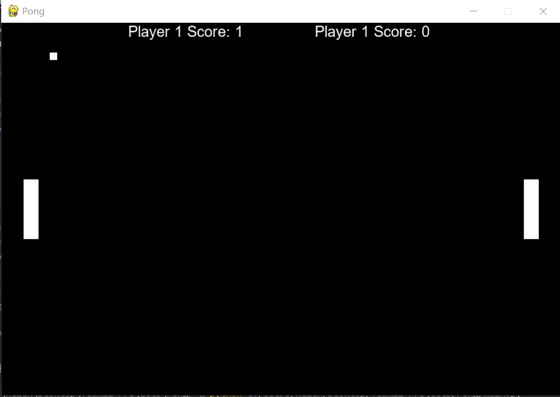

Pong is a table tennis–themed arcade video game, featuring simple two-dimensional graphics, manufactured by Atari and originally released in 1972. It was one of the earliest arcade video games; it was created by Allan Alcorn as a training exercise assigned to him by Atari co-founder Nolan Bushnell, but Bushnell and Atari co-founder Ted Dabney were surprised by the quality of Alcorn's work and decided to manufacture the game. Bushnell based the game's concept on an electronic ping-pong game included in the Magnavox Odyssey, the first home video game console. In response, Magnavox later sued Atari for patent infringement.
Hisoka's Nen type is Transmutation, allowing him to change the type or properties of his aura. He most often uses Elastic Love - Bungee Gum (伸縮自在の愛バンジーガム, Banjī Gamu), which gives his aura the properties of both rubber and gum. He also uses Flimsy Lies - Texture Surprise (薄っぺらな嘘ドッキリテクスチャー, Dokkiri Tekusuchā), which allows him to reproduce the texture of his choice on any flat surface; such as making a handkerchief appear to be skin. Hisoka is a popular character with fans, coming in fourth and fifth place in the series' first two popularity polls. (Wikipedia)